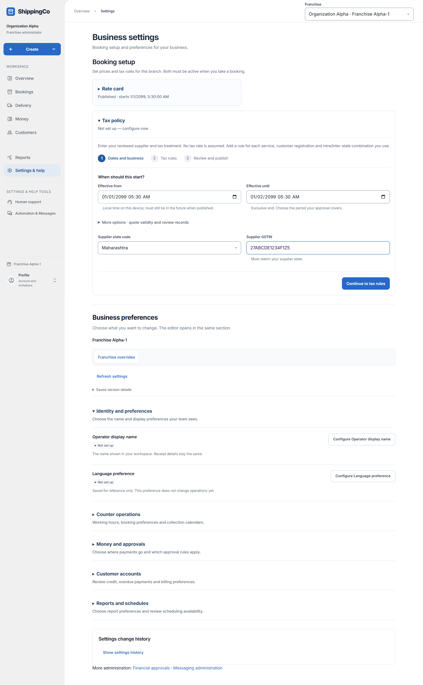
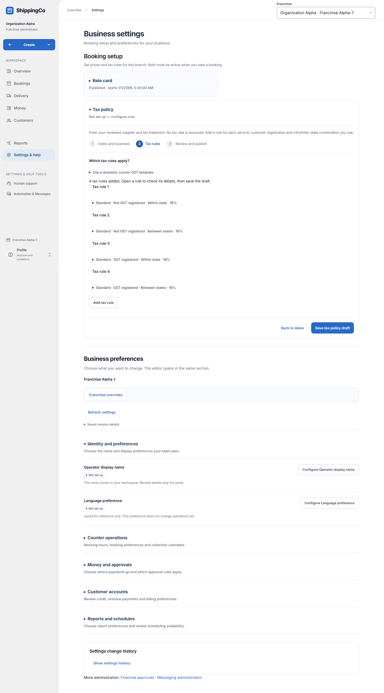
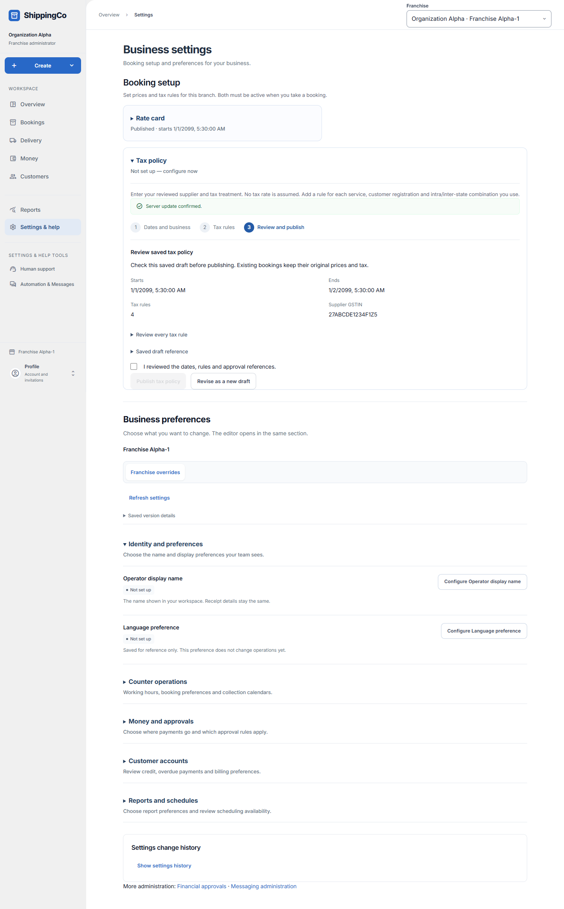

Set up a tax policy
Set the branch’s reviewed tax identity and rules. This guide explains the form; it does not choose a tax treatment for your business.
Before you start
- Open Settings & help, then Tax policy in Booking setup. Publication requires an authorised owner or administrator.
- Keep the supplier’s actual GSTIN, state and reviewed tax rules ready.
- The current tax setup is a states-only domestic pilot. Union Territories and special cases outside its supported setup need a separate supported process.
- The three steps are Dates and business, Tax rules, and Review and publish.
- The rate-card and tax-policy periods must overlap when a booking is created.
Step 1 - Business identity and dates
- Effective from and Effective until: choose a future starting time and a later ending time. Avoid overlap with the current published policy.
- Supplier state code: choose the state of the supplier issuing the bill. Do not choose the receiver’s destination state just to change the tax result.
- Supplier GSTIN: enter the supplier’s 15-character GSTIN. Its state prefix must match the supplier state.
- More options contains Quote validity (seconds), Approval basis and Source basis.
- Review when publishing records the publisher’s review. Use Existing approval document only when a real approval document exists.
- Entered directly in this form describes manual entry honestly. Existing source document requires its real reference.
- Select Continue to tax rules. The entered business details remain available if you go back.

Step 2 - Use a template or enter reviewed rules
- Use a domestic courier GST template is optional. Open it and read the displayed scope, rates and Government sources and scope before using it.
- Choose the supported courier services you actually sell. Confirm the registration and service-scope statement only when it is true for your business.
- Replace tax rules with this template replaces the draft rules; it does not publish them.
- After applying the template, the panel closes and a status states how many rules were added. Each complete rule appears as a compact summary.
- Open any rule summary to inspect or change its fields. Incomplete manual rules open for entry.
- The template does not fill your supplier GSTIN or choose a booking customer’s place-of-supply facts.
- Do not use a template for an excluded or unsupported case. Have the appropriate tax treatment reviewed before publishing.

What each tax-rule field means
- Service: the service category this rule covers.
- Customer registration: GST registered or Not GST registered. Each required combination needs its own rule.
- Tax jurisdiction: Within supplier state or Between states. The booking’s checked facts determine which rule is used.
- Classification reference: the reviewed service classification, such as the applicable SAC supplied by the chosen template or your reviewed policy.
- Rule evidence reference: the real source supporting that rule. The template supplies its notification reference automatically.
- Treatment: Taxable, Nil-rated or Exempt. Use the reviewed treatment, not the option that gives a preferred bill total.
- Total tax (%): enter the reviewed total rate for a taxable rule. The app splits a within-state rule into equal CGST and SGST components; a between-state rule uses IGST.
- Apply tax to freight and Apply tax to packing: choose which charge lines the reviewed rule covers.
- Add tax rule creates another combination. Remove tax rule removes that draft row.
- Do not repeat the same service, customer-registration and jurisdiction combination. Check every required combination before saving.
- Select Save tax policy draft when the rule list is ready.
Step 3 - Review and publish
- Check the supplier GSTIN, policy dates and rule count.
- Open Review every tax rule and confirm the service, registration, jurisdiction, treatment, rate and supporting references.
- Tick the review confirmation and select Publish tax policy.
- A published policy is fixed. Existing bookings retain their saved tax evidence.
- Use Revise as a new draft for changes before publication. For a later change, publish a properly dated new policy.
- If the result is uncertain, use Retry same request. If a period or rule conflicts, correct a new draft rather than trying to overwrite history.
- After the effective start, return to booking and calculate the price using the customer’s actual billing and handover details.
